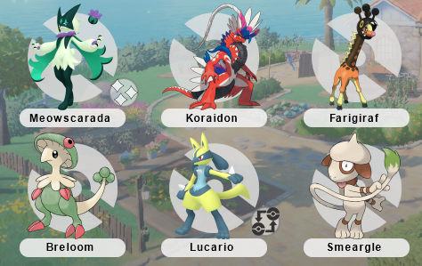
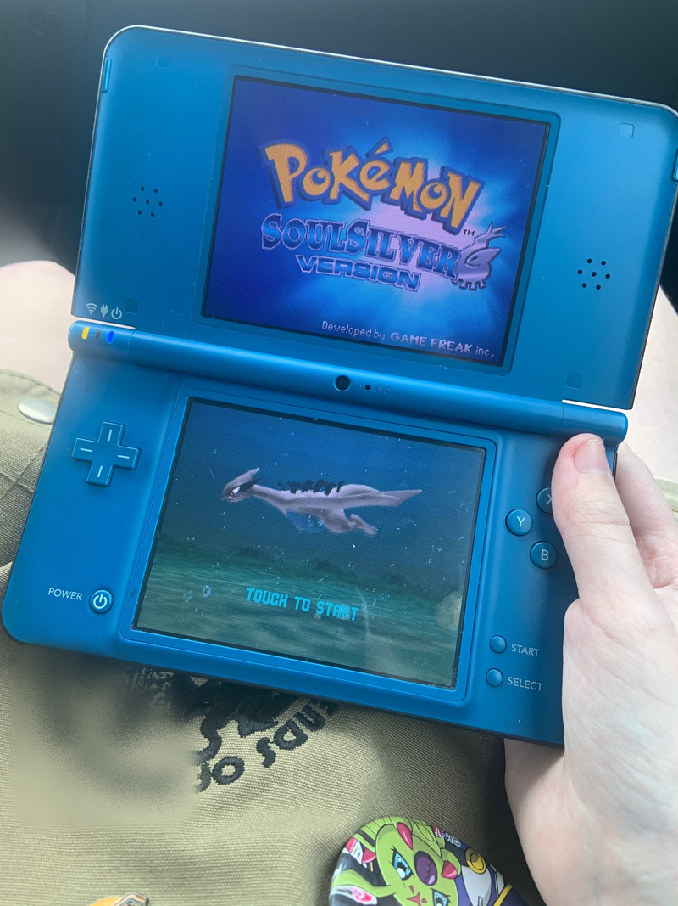

10 journal entries in over a year! aren't i productive? ;3 at the time i'm writing this, it's only 5 days until my 24th birthaday... oh, it's also mother 3's 18th anniversary, isn't it? fuuuuck. i had forgotten. this is the first year in a while i haven't gotten obsessive over that date passing. oh well. happy adulthood mother 3~ (wait, i was more excited about that than my birthday, wasn't i?)
it's been a mostly good week. i've been meaning to write a journal entry for a long time at this point, actually, but kept being too busy to write - or too distracted. i've had a lot of fun spending time with friends and playing games, and am excited to do even more of both over the next week, too. i wanted to post a lot of art that i've been working on lately! i've had a lot of fun with it, more than usual, anyway. my relationship with art is tumultuous at the best of times, but i've been generally more energetic and passionate about expressing myself so it's been a nice thing to resort to from time to time when i'm not working on the website. funny, it used to be the other way around... oh well, whatever. just like in my last entry, i've been thinking about kieran and florian a whole lot lately. here's some art i made about them:
i'm not going to have a whole secondary journal entry dedicated to these two LOL, but needless to say they've been on my mind! i've been playing through scarlet lately with the intent of going through the story with "my" florian's team, but have been majorly roadblocked due to shiny drought. despite using methods, which i usually avoid. T_T i'm aiming for a shiny sprigatito. i'll also have to get a shiny lucario eventually... here's my idea of his team:

the shiny lucario is meant to be the "SH1NYBUDDY" distribution lucario, but i missed out on it before it expired. :( if anyone has one they aren't attached to i would love to use an authentic one in the cherish ball on my team. that's probably a big ask, though. it's just because of the official art that was made with florian for this event. i think a lot of his team wouldn't really be focused on fighting, and moreso on catching pokemon. but the ones that he does have are probably not raised by him - i like to think he enjoys trading and is fairly flippant about his relationships with his pokemon. i think his prowess in battle occurs almost primarily just out of luck due to his "demigod"-like status as the protagonist, in contrast to (champion) kieran, who's team is min-maxed to the extreme.
i've been playing a lot of pokemon lately in general. since coding the page for my soul silver file i've picked it back up again. partially due to that, and partially because my irl friend alice got me a dsi xl for my (early) birthday, which had quickly become my dream handheld... (thank you alice!) the dsi is my favorite of the ds line, and i had no idea that the dsi xl even existed until i visited bluejay back in september (hi if you're reading this). the blurry upscaling that happens as a consequence of playing ds games on a large 3ds screen always annoyed me, even though i know you can play them in their native resolution, technically. who wants a big black border around their game? the dsi xl fixes this problem, and i'm absolutely loving it. it also features two IPS screens, so they're super crystal clear. we got this dsi for about half the price an xl would usually go for, because there was a game stuck in the slot. the seller thought they could scam us, but we took it to a repair shop and they pulled it out instantly. there was just a piece of paper stuck behind the cartridge. everything works absolutely flawlessly, and there's next to no scratches on the screens.

i also got an elgato recently. specifically with the intent of making youtube videos. i've gotten a lot of ideas, but most of them will require a lot of research and effort to make, so i think whatever actual content i have to post will still be a long while away. are there any ideas you'd like to see? i'm going to keep the ideas i have for now close to my chest, but i am excited about it...
i got distracted and started adding ayano's comment widget to this page. i think i'll try adding this to my journal entries from now on. what do you think?